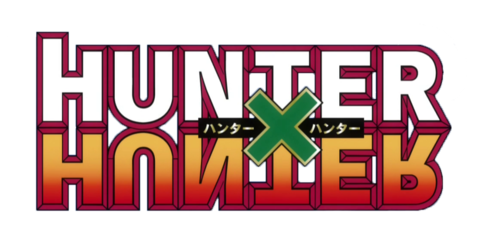
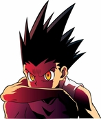

Gon est un jeune garçon avec de longs cheveux verts foncés
hérissés en pointes avec des reflets verts clairs et les yeux noisettes. Sa tenue habituelle est composée d'une veste verte avec des
bords rouges/orangés couvrant un débardeur noir ou blanc en dessous,un short court vert, et des brodequins verts. Dans certains
arcs, tels que les arcs Greed Island et Kimera Ants, il enlève sa veste et ne porte que son débardeur. Dans l'arc
Greed Island et au début de l'arc Kimera Ant, il porte le Collier du Paladin, une carte Greed
Island avec la possibilité de purger les effets externes sur une carte que le porteur a. Gon est un garçon athlétique, rustique et sympathique qui est à la recherche d'aventure. Aussi, il n'est pas très bon en maths. Cependant, après avoir passé beaucoup de temps dans les bois lorsqu'il était enfant, il est devenu très gentil avec les animaux. Gon est énergique, et est connu pour être simple d'esprit et déterminé. Cette détermination et son talent conduit à deux alliés potentiels et ennemis potentiels à cause de sa confiance en lui. Il a des sens inhumains. Gon a un sens aigu de l'odorat comme un chien et a une très bonne vision, ainsi qu'un goût très vif.
Type de NEN
- Renforcement
- Transformation
- Emesion